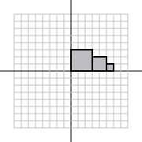
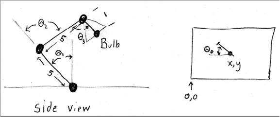

|
Resources |
Main / P2-1CS559 - Project 2, Phase 1Transformations HomeworkTurn your answers in by placing a file in your handin directory under P2-Written. Please provide either a plain text file (.txt) or an acrobat file (.pdf). We will use the AFS file modification date to determine when the assignment was turned in. If you choose to work in pencil and paper, please either type your answers in (preferred), or scan your pages in. This assignment is due on Monday, October 15th at 11:59pm, with late assignments accepted according to the class late policy. Note: many of the questions here come from old exams and assignments, so you can find the answers on the web. Looking up old answers is OK, but you probably want to make sure you can do the problems yourself since you will most likely see similar things on the exam. For questions 1-5, we consider a 2D graphics system that works like OpenGL. It uses 3x3 homogeneous matrices and a post-multiply convention. It has a matrix stack, and supports the following commands: PUSH – makes a copy of the top element of the matrix stack
POP – removes the top element of the matrix stack
TRANS(x,y) - translates by x,y
ROT(t) - rotates counter clockwise by t degrees
SCALE(x,y) - scales by x,y
SQUARE - draws a unit square between (0,0) and (1,1)
Here is an example program and its output:
Question 1:If we had left out the PushMatrix/PopMatrix commands in the example program, the last square would have appeared in a different place. Where would it have been? (give the positions of its 4 corners) Question 2:Write a program that creates the following picture, without using PushMatrix or PopMatrix. 
Question 3:When dealing with images, we often like to measure the screen in pixels (with 0,0 being the upper left, and width-1, height-1 being the lower right). When dealing with geometry, we often like to have “Normalized Device Coorindates” where the center of the window is 0,0, and 1,1 is the upper right corner (and -1,-1 is the lower left). Question 3A:Using the 2D transform commands above, write a program that creates the transformation from normalized device coordinates to pixel coordinates for a screen that is 640x480 pixels on the top of the stack. (your answer should be a sequence of commands) Question 3B:If the screen is 640 by 480 pixels, what would the matrix be? (your answer should be a 3x3 matrix). Hint: it is probably easier to figure out the answer directly than to multiply out the matrices. Question 4:Give the 3x3 matrix that would transform the unit square (with one of its corners at 0,0, and the opposite corner at 1,1) such that: The corner that was at the origin goes to 1,2. The corner that was at 0,1 goes to 3,4. The corner that was at 1,1 goes to 5,6. Question 5:Give the program that creates a rotation of 45 degrees around the point 3,4. Question 6:Consider the desk lamp in this picture: 
The lengths of the arms are 5, and the tip of the bulb is 1 unit from the joint. x,y, and theta 0-3 are all parameters to position the lamp. Write an expression that computes the position of the bulb (point B) in the coordinate system of the desk. Your expression should be the product of a set of Matrices T(x,y,z) (that translates by x,y,z) and Rx(theta) that rotates theta degrees around the x axis (or Ry or Rz). These matrices are post-multiply and the rotations are measured counter clockwise in right-handed coordinate systems. Question 7:Consider a 3D transformation M (a 4x4 homogeneous coordinate matrix) that is created by composing a rotation and a uniform scale. M maps the unit X vector to (0,1,1), and the unit Y vector to (0,1,-1). Question 7A:Where does M map the unit Z vector to? Question 7B:What is the amount of the scale used to make M? |